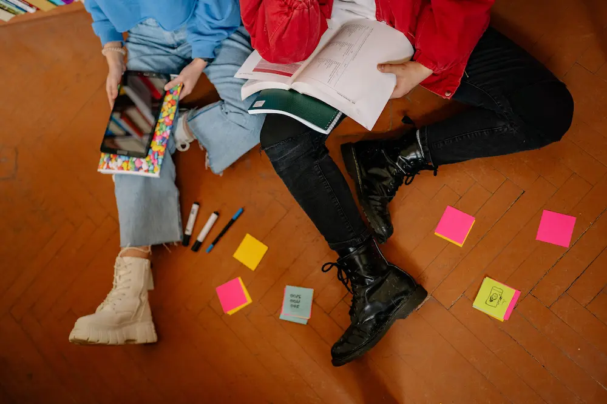

FocusFirst
Beat procrastination and start studying today
Why We Procrastinate 🧠
According to London Psychologist Clinic, when a task feels stressful or boring, our brain looks for an easy escape, like checking the phone, because avoiding it feels better in the moment. In reality, procrastination is not delaying the task itself, but rather about avoiding the negative emotions it brings. Studies suggest that between 80% and 95% of students struggle with procrastinating, so recognizing that it is an emotional reaction, and not laziness, is the first real step toward changing it. We need to face our difficulties instead of ignore them; by doing so, we build the mental strength to push through and stay one step ahead of them.
Common Reasons We Put Things Off
- Fear of failure: when a task really matters, the fear of not doing it well can stop us from starting at all.
- Perfectionism: waiting for the "perfect" moment or mood that never actually comes.
- Lack of motivation: tasks that feel boring or pointless give the brain no immediate reward.
- Feeling overwhelmed: when a task seems too big or unclear, we freeze and don't know where to start.
Quick Tips to Start 💡
Knowing why we procrastinate is only half of the battle. These small, science-backed habits can help you stop stalling and actually begin:
- Try the 5-minute rule: promise yourself you will work for just five minutes. Once you start, momentum usually takes over and keeps you going.
- Plan when and where: instead of "I'll study later," decide something specific like "I'll start at 10 a.m. in the library." A clear plan makes it far more likely you'll follow through.
- Break it down: split a big task into tiny steps, such as "open the document" or "write one paragraph." Each small win gives your brain a boost to keep moving.
- Be kind to yourself: guilt only makes procrastination worse. Treat a slow start as normal, forgive yourself, and simply begin again.
- Reward your progress: celebrate small efforts with something you enjoy. This trains your brain to link studying with positive feelings.